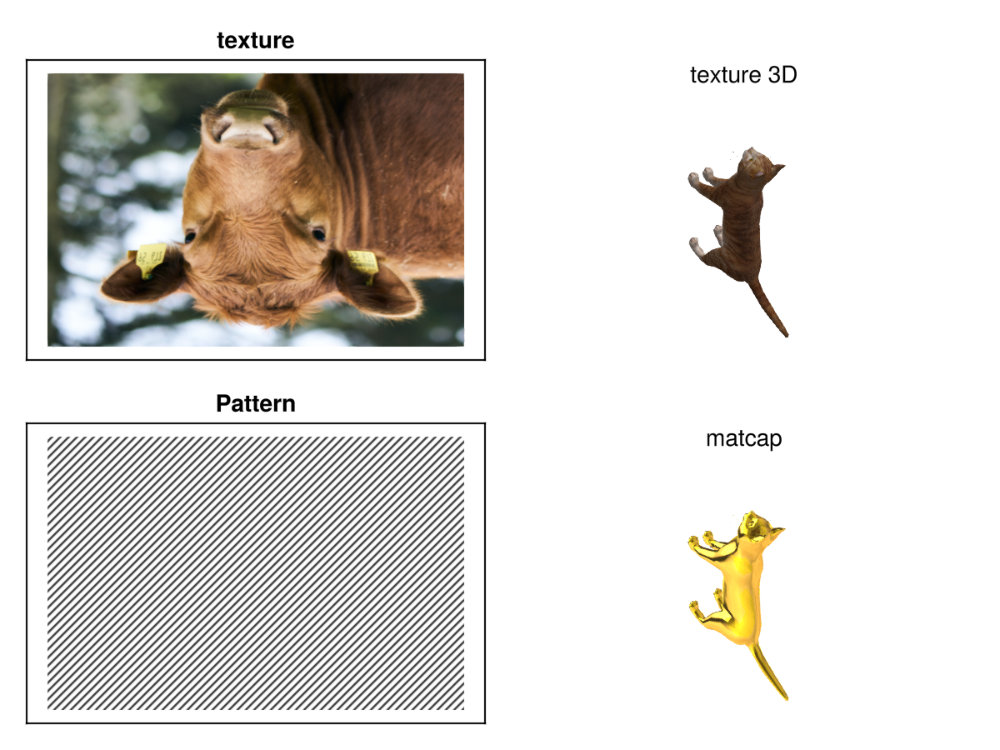
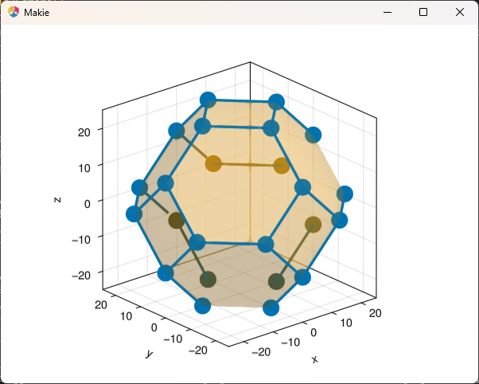
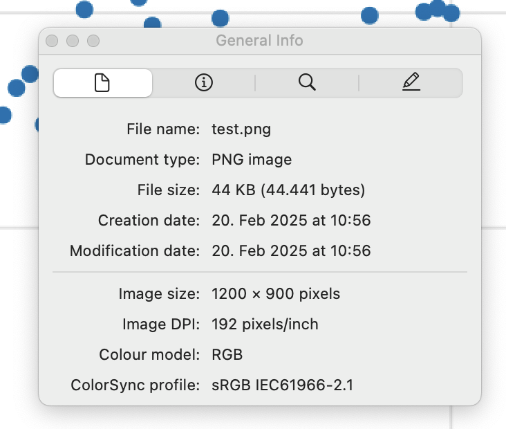

Makie v0.22.2
Makie 0.22.2 is finally here and introduces many fixes and improvements.
Cleanup Patterns/Hatching
We've enhanced pattern support by adding tests and fixing various issues along the way. Patterns should now work more consistently across different plot types and backends. Additionally, we've improved line rendering for
LinePattern and anchored patterns to plot coordinates for better visual quality.
If you're not yet familiar with patterns, you can now learn more about them, along with other texture-like color options in the updated color documentation.

Nudge Axis3 clip planes to avoid clipping at 0 margin
When we updated
Axis3 to feature zooming and translation controls we also added clipping at the axis boundary. If a plot element sits right at the boundary, e.g. due to setting margins to 0, they would sometimes get clipped and sometimes not. To avoid this, we moved the clip planes slightly outside the axis. As noted below we also added the option to completely turn off clipping in a separate pull request.
| v0.22 | v0.22.2 |
|---|---|
|  |

|
Added a tutorial on creating an inset plot
Introduced a tutorial explaining how to create inset plots. Mention the zoom_lines function from MakieExtras.jl for connecting inset plots.

Add documentation on mesh normal generation
Documented how vertex order affects normal generation in mesh plots, providing clarity on how different vertex arrangements can impact plot appearance.

Cleanup volume
We addressed discrepancies in volume plot algorithms between GLMakie and WGLMakie and added more detailed documentation and tests for volume rendering. We fixed an issue with
:mip truncating values at
0, fixed
RGBA algorithms not accepting
RGBA data and connected the
absorption keyword to
:absorptionrgba and
:indexedabsorption.


Improve nan handling in surface plots
We improved handling of NaN values in surface plots, ensuring consistency across different backends and updated reference images to reflect these changes. Specifically we are now treating NaNs in positions as invalid data, resulting in the relevant vertices being cut instead of defaulting to 0.
| v0.22 | v0.22.2 |
|---|---|

|

|
DPI metadata for png
Added DPI metadata to PNG files, allowing external applications to interpret and display images at the correct size specified by their px perunit setting.

Voxel improvements
In
#4758 we changed how textures are handled by
voxels. They now rely on
uv_transform instead of
uvmap which gives you further control about texture coordinates. For example, it allows you to rotate the texture. The texture coordinates generated for the different voxel sides have changed to be more consistent with expectation, see
the texture mapping documentation. We also adjusted texture coordinates to scale with
gap so that voxels remain fully covered by the texture they are assigned.
Beyond that we have some smaller fixes:
-
Fixed an issue with voxels not rendering on linux with firefox #4756.
-
Fixed an issue causing voxel planes to shift when using
rotate!(plot, ...)#4824 -
Fixed
uv_transform = :rotr90and:rotl90being swapped #4758
| v0.22 | v0.22.2 |
|---|---|

|

|
Curvilinear
contourf
Enabled curvilinear
contourf plots by allowing contour calculations to be dispatched on and transforming Isoband output using bilinear interpolation.

Fix broken
voronoiplot for clipped tessellations
Resolved an issue with
voronoiplot to work correctly with clipped tessellations and automatic color generation which was previously causing errors.
Add option to turn off clipping
We introduced a feature that allows users to disable clipping in
Axis3 by setting
ax.clip[] = false. Note that you could already do this on a per-plot basis by overwriting the
clip = Plane3f[] attribute when creating a plot.
Resolve :data space when deciding whether to connect transformations
When a plot is created its transformations, i.e. the
transform_func (for example the
log transform of an Axis) and model transformations (as set by
scale!(),
rotate!() and
translate!()) are inherited from its parent based on whether their
space is compatible. This only used to check the direct parent, which created a problem when
space = :data represented pixel, clip or relative space through a pixel, empty or relative camera. We now trace the space up to the parent scene to resolve this issue.
Improvements for Slider updates
Added options to slider updates, including
update_while_dragging and
throttle, and introduced
lowres_background to the
Resampler to optimize performance when updating
heatmap(Resampler(data)) often.
Internal fixes for (W)GLMakie
-
Fix rare shader compilation error #4755
-
Upgrade to threejs 0.173, fixing a rare problem with NaNs in buffers
-
Fix WGLMakie nan error in cut plane, which broke Axis3 #4772
-
fix UInt underflow in line indices #4782
Allow higher dimensional geometries in poly
Restored support for rendering higher-dimensional geometries with the
poly() function, enabling 3D shape visualization as a mesh with outlines.
allow setting inspectable in the theme
Enabled setting the
inspectable attribute within themes, allowing for theme-wide customization of inspectability options across plots.
Allow
Block.attri... to autocomplete
We added support for autocompletion for attributes on Block types. This allows you to tab-complete attributes while looking for documentation, e.g.
?Axis.xl will complete to
?Axis.xlabel.
Consider visible in PolarAxis protrusions
Fixed an issue where PolarAxis protrusions did not consider visibility states, e.g. due to being hidden by
hidedecorations!(ax).
Widget optimizations
Optimized widget updates by reducing redundant updates, and by removing
pick() usage where possible. This solves a rare issue, where
Textfield would stop working on a server with higher latency.
Fix WGLMakie tick and window_open events
We fixed an issue causing tick events to not be spawned in WGLMakie and connected the window_open event. This also fixes issues with animated Widgets, e.g. Toggle not working in WGLMakie.